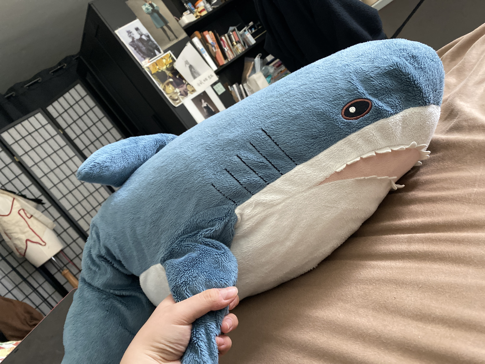

“It’s just always been here. I used to have a tiny bed. Before I went to bed I would move my pillows on my table or else I had no place to sleep.{1} But my shark helped me to fall asleep quicker, so I keep him with me under the blanket.
There was a period of time that I hated my stuffed animals, because I was confused with my life. I didn’t know what I want, the stuffed animals just looked way too happy, I wanted them to be as miserable as I was. But my shark always looks grumpy as hell, but he is so soft I could hold him and he will comfort me in a way. I changed a lot during college, I changed very fast and very drastically, I’ve never experienced this kind of change. My shark is sort of witnessing the change of me but he is always there, not changing.”
Xing Bao
2017
